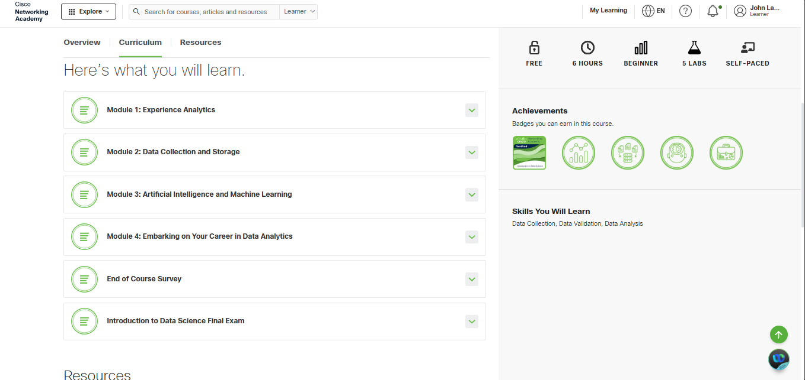
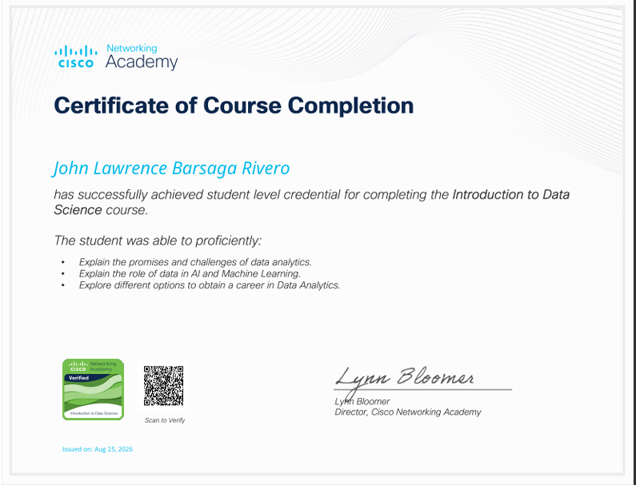

I completed the Introduction to Data Science course from Cisco Networking Academy on August 25, 2026. The course helped me understand the basic concepts of data science and how data is used to understand information, solve problems, and support decision-making.
During the course, I learned about experience analytics and the different ways data can be collected and stored. I also learned about the importance of data and how proper data collection and storage can help make information more useful and organized.
Another part of the course focused on Artificial Intelligence and Machine Learning. I learned how AI and machine learning are connected to data and how they can be used to analyze information and perform different tasks. This helped me understand how these technologies are becoming important in the field of Information Technology.
The course also introduced me to different career opportunities in data analytics. I learned that working with data requires different skills, such as analyzing information, understanding patterns, and using data to help solve real-world problems.
Overall, completing the Introduction to Data Science course was a valuable learning experience for me. It improved my understanding of data, artificial intelligence, machine learning, and data analytics. The knowledge I gained from this course can be useful in my studies and can also help me explore future career opportunities related to data and technology.


View PDF Verify My Badge